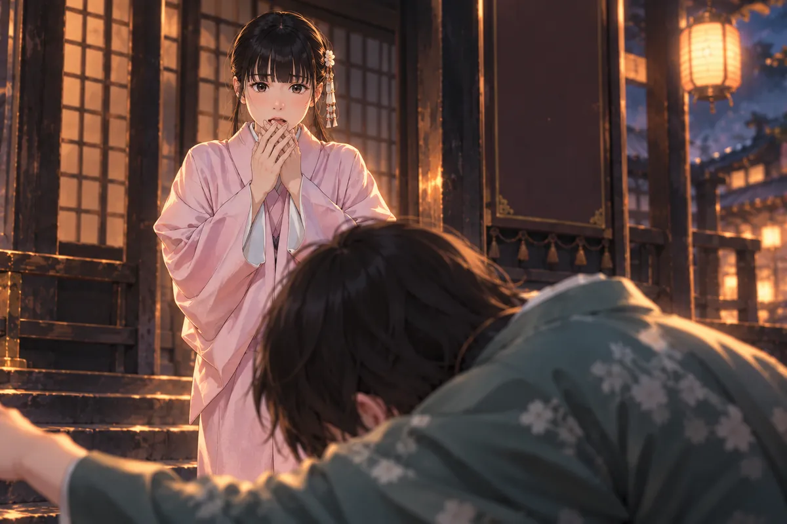

柏宏在漫畫店外喊她全名。
店裡剛忙完，語彤把手上的東西放好，還沒走到門口，就聽見那三個字從外面響進來。她回頭看店員，對方已經在笑，於是她出去的第一句不是謝謝，而是嫌他晚上這樣叫很恐怖。
柏宏拎起晚餐，想用袋子擋住那個抱怨。她先看食物，眉頭便鬆了一點，卻仍問下次能不能只叫名字。
他說知道了，下一句又把全名順口講出，自己也發現，連忙改。語彤瞪他一眼，忍不住笑。
他們找地方把晚餐放下。柏宏替她開啟袋口，動作有點忙，她讓他先顧好自己的，便把粥拿到面前。
那時夜很普通，店還亮著，工作也只是今天稍累，不會成為往後每次經過都得先想起的一段路。
語彤嫌晚上這樣叫很恐怖。他把瘦肉粥和漢堡拿出來，才稍微討回一點好臉色。
他說打工辛苦，怎麼還花錢染髮，話沒說完，她便問，低收入戶就只能用破爛東西嗎。
柏宏急著道歉。其實他想說，她本來就很好看。
他開始解釋染髮費錢，講了幾個字就知道又把話帶錯，趕快停。語彤看著他，等他真的說清，而不是用為她好把一句不好聽的話蓋過去。
柏宏終於說本來好看。她問那現在呢，他立刻答現在也好看，答得太快，兩人都笑了。
笑完，她還是把爸爸的意思講給他聽。錢是自己打工掙的，能用，能試，不是每一次想換個樣子都得先證明這個家庭配得上。
柏宏聽著，慢慢不再搶著接。他以前總先替她省，覺得那是關心，卻忘了有人辛苦掙錢，也可能只是想和同齡人一樣，給自己買一件喜歡的東西。
語彤沒有再追著問。他肯聽，她便肯把晚餐吃下去，還把自己不想留的那一小口推給他，讓他別只顧著道歉。

語彤明白。他們和好了，吃著晚餐。爸爸如今收入穩定，要她學正常消費，自己的薪水，可以自己做決定。
話題轉到辣雞。她承認是自己報警：看見他帶奇怪粉末，吸完後整個人變了，怕傷到同學。
柏宏很擔心。她說，放著他在學校更危險；若是勇者辛美爾，也會這麼做。再說，她還有柏宏會保護她。
那時，柏宏聽著，努力把自己想成足夠可靠的人。
她說有他會保護，語氣像玩笑，眼睛卻真的看著。他背直了一點，想說當然，又覺得如果只是答得大聲，似乎還不夠。
於是他問以後遇到那個人能不能先跟自己說，別一個人碰。語彤點頭，說知道，卻又說學校不能因為怕，就讓他一直帶那些東西進來。
柏宏懂她。他喜歡的本來就是這個人，看到不對會說，不會因為別人笑兩句便把自己縮成沒有意見。可是越懂，越知道關心不能只靠一句別管，去讓她變成另外一個人。
他陪著把晚餐吃完，替她收袋子。那天的保證沒有被誰正式記下，後來卻留得比所有跑步成績都清楚。
獨自騎車經過時，他看見店口仍能放下兩份晚餐的位置，手在車把上緊了緊，終究沒有停在門前。
如今，他一個人騎車。
路仍在，店也仍在。腿部記得怎麼用力，世界卻沒有一條跑道，能讓他回到她還在的那個晚上。
大家說他跑得快。
前方號誌轉紅。柏宏停下車，揉了揉眼睛，才發現自己又哭了。
兩位女神在射氣球攤前，搬出各自的弓術師承，誰也不願少贏一顆。
攤主本來笑著介紹規則，聽到一連串神名，手上的東西便慢慢放下。兩位愛神都說自己準，對方也都不肯只讓一句，最後一顆氣球還沒射，氣勢已經先把旁邊的人引過來。
謎望著那片熱鬧，問神明比賽會不會算功德。小雨說不知道，至少輸的應該不會高興。語彤聽完，往遠處看一眼，覺得能把昨天還想出手的人見成今天認真爭輸贏的遊客，實在很奇妙。
她們沒有擠過去，先往食物攤走。和服的袖子要顧，裝畫具時慣用的姿勢也換了，語彤走兩步便低頭檢查。小雨讓她慢慢來，今天不用端客人的菜。
燈籠一盞盞亮，街上卻不像店裡開燈那樣規矩，笑聲常從看不見的地方冒出來，走近才知道哪裡又聚了一群。
小雨和語彤穿和服，買手工雞蛋糕。燈籠照著紙袋，謎看得新奇。月老平常懶，辦起祭典卻有模有樣。
老闆收店就來。語彤聽著，想再買一份給他。
她問雞蛋糕能不能放久，老闆回答，她便在原來的數量外加一點。小雨看見，沒笑她想太多，只說等乾爹來再吃就好。
紙袋一熱，手心也跟著暖。語彤低頭看形狀，想起爸爸有時拿回家的食物，怕路上壓壞，便讓她先別亂翻。她那時總嫌自己又不是小孩，如今卻也捧得小心，想等人來了才讓他看到完整的一份。
謎探頭，小雨讓它看，卻沒有讓它鑽進袋口。語彤笑了，問回去能不能把這些畫出來。兩人於是討論幾種顏色，討論哪一盞燈最好看，沒急著證明散心真的有用。
話還沒講完，遠處傳來一陣歡呼。她抬頭找是哪位神射中了，胸口卻在這個最放鬆的時候忽然一緊。
人間的港邊，林伯伯查到業鏡羅漢，真是美濃一帶有人祭拜的神。夢裡女兒說的事，原來有地方能尋。
辣雞卻在這時出現。

他怪這對父女害自己被扣零用錢，把老人壓下去，手掐住脖子。
夜市裡，語彤突然抓住胸口。
「放開我爸！」
小雨手裡還接著方才那隻紙袋，聽見這聲便立刻看她。語彤沒有看夜市，她盯著一個旁人見不到的位置，臉上的血色退得快，手卻越抓越緊。
有人退開，有人認出紫氣，原本想過來幫的腳步便停。語彤顧不上，那隻掐住爸爸的手在她腦裡太清楚，彷彿自己仍得從水裡往上抓，再慢一點就沒有氣。
她想衝過去，不知道路在哪；想叫誰，叫出的仍是爸爸。
老闆到她面前，小雨便往旁邊讓，讓少女看得見他。神明的氣息壓來，遠處的笑聲一下斷了，哈索爾已經轉身。
語彤還抓著衣領，沒有辦法先把自己說清楚。老闆也不要求她在神明出手前解釋得漂亮，只先站住，讓那些要落到她身上的力量，必須先經過自己。
魔氣穿出身體，雞蛋糕的暖意瞬間遠了。阿芙羅黛蒂察覺，哈索爾轉身。老闆擋到語彤前面，眼裡也亮出紫光。
誰敢動她。
哈索爾看清，準備出手。月老趕到，喝止她在三途川動武。
他接住神明的怒，讓老闆去處理語彤。
燈籠仍亮著。少女握緊胸前的衣料，整個夜市，卻已聽不見方才的笑。
阿副一拳將辣雞打倒，扯開他掐住林伯伯的手。
林伯伯咳得彎下身，手掌撐著地面，想起來，卻又不能立即用力。阿副沒有跟著對方喊，先看老人，問還能不能呼吸。
女友在旁邊通報位置。她一面講，一面留意辣雞會不會再起來，手機握得很穩，聲音卻比平常高。
辣雞搬出爸爸，搬出手冊，像只要講得夠快，剛才那隻掐人的手便可以被蓋過去。阿副聽見，臉色沉了，卻沒為了爭這個身份再往前打一拳。老人還坐在地上，需要先有人扶。
林伯伯道謝，阿副說先別講。他把手遞到老人能抓的位置，等對方慢慢站穩，才讓女友確認救護車到哪裡。
港邊的風沒有停。阿副衣袖被老人捏著，想起自己曾被人抓回來的時候，手就放得更穩一點。
少年倒地，仍把未成年、精神病手冊和議員父親往外喊。阿副的女友已叫警察與救護車。林伯伯喘著氣，道謝，終於能重新呼吸。
三途川，天秤秤過語彤和老闆。
哈索爾驚訝，靈魂竟如此純潔。月老說，魔性來自人間因果。她的怒這才退下，又去纏月老，最後被阿芙羅黛蒂拉回射氣球攤。
燈下，語彤問老闆也有魔性嗎。
他說，七十多年前，自己偷偷賣米給窮人，被徵糧的人槍斃。到了地府，也曾第一天就索要黑令旗。
至今，他仍未原諒。
語彤本來以為神明會講已經不介意。老闆的回答卻沒有把自己擺到比她更高的地方，甚至承認，遇到某些客人，還是會覺得不舒服。
她看著他的臉，想起市役所裡擋在前面的人。原來他能站住，不是因為心裡什麼都不疼，而是那些疼他已經認識了很久。
她急著說會放下，一半是想讓他放心，一半是怕擔保沒做好，會真的害他晚節不保。老闆搖頭，她便停下來，聽他講不必每次都勉強自己接待。
她從前總被人要求別那麼敏感、別愛管，一件事情不舒服，最後便是她該改。今天有人教她先承認，教她能把做不了的交給別人，語彤竟得想一會兒，才知道這不是叫她偷懶。
夜市的燈還亮，她把手從胸前慢慢放下。
語彤急著說會放下恨，他卻搖頭。先承認自己恨，再學會與它相處。遇到讓他難受的客人，便請小雨接手。生活可以慢慢變得舒服，不必每次都把自己推回刀鋸地獄。
他把裝有功德的懷錶交給她，去見想見的人。
懷錶在掌裡有重量，她先往回推，說已經麻煩很多。老闆讓她拿著，有功德就用，不必先列出每一件如何回報。
她握穩，想問是誰都能見嗎，又想到柏宏，便把後半句收住。老闆看見她眼神變了，沒有笑，只讓她去準備。
託夢時，她最先想到的竟不是該對柏宏講什麼，而是芒果冰要怎麼放，才不會像以前那樣，兩個人同時伸手搶同一塊。
那張臉出現，柏宏果然先喊名字。語彤本來準備好用不太在乎的口氣，真聽見了，眼裡卻先熱起來，只好把冰推給他，叫閉嘴。
他望著她，像怕答錯一句，她就會再次不在。她指指他的嘴角，讓他把沾到的擦掉。這個熟悉的嫌棄終於讓他動了一下，也讓她能多留一點平常的樣子。
夢裡，柏宏抬頭，喊出她的名字。
「閉嘴吃冰啦。」
語彤把芒果冰推近，笑他嘴巴沾到了。她沒忘記恨，卻仍然記得，自己也喜歡這樣的下午。
語彤試著畫水。
鉛筆落下，剛畫出池沿，手便緊了。她把紙翻過去，畫夜市的燈，線仍不穩。
老闆沒有問為何畫壞，只把桌邊的茶拿遠一點，讓她有地方擺手。
她說，都到這裡了，還是怕水，很沒用。
老闆看著翻過的紙，說今天不想畫，就不畫。
「可是我不是應該……」
她說不完。應該勇敢，應該能唱，應該成為爸爸在夢裡看見的好孩子。她知道老闆沒有這樣要求。可是一看見自己發抖的手，那些話便全冒了出來。
老闆指指旁邊空白的一頁，問要不要先畫雞蛋糕。
語彤看了他一眼。
「這麼沒志氣？」
「好吃就可以畫。」
她終於換筆，畫出六個圓圓的糕。畫到一半，嘴角慢慢動了。那張水面仍壓在下面，沒有被撕掉，也沒有被逼著完成。
老闆起身去收店。她在紙角寫下今天，然後多畫一個，留給乾爹。